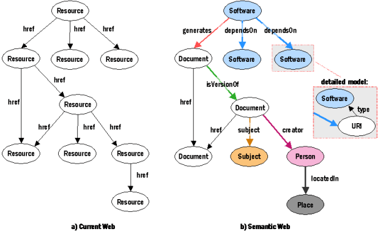

Introducción a los datos estadísticos públicos

Difusión
Primero fue la tabla...
Formatos de difusión
| consumo | complejidad | popularidad | metadata | |
|---|---|---|---|---|
| manual | baja | muy alta | alta | |
| manual/auto | media | alta | alta | |

|
auto | muy alta | muy baja | alta |
| auto | muy baja | muy alta | alta | |
| auto | media | baja | muy alta |
Dataviz: básica
Google Charts: simple y con poco código
Dataviz: mapas

Raphael.js: estándar (SVG) y browser-compatible
Dataviz: Google Geomap
...o web de los datos

W3C Semantic Web Activity (Marja-Riitta Koivunen, Eric Millers)
semstats: ¿para qué?
- mejorar acceso y facilitar análisis de datos estadísticos
- datos bien descritos y contextualizados
- nuevas asociaciones entre conjuntos de datos
- facilidad para habilitar procesamiento automático de recursos web
Enlazado: ¿con quién?
| Base de datos | # enlaces |
|---|---|
| Geonames | 4 |
| DBpedia | 45 |
| DBpedia española | 47 |
| INE | 251 (no RDF) |
| Eurostat | 22 (no RDF) |
| LEM para Bibliotecas Públicas | 168 |
| LEM de la Biblioteca del Congreso de EEUU | 151 |
ICANE también está en programmableweb
Hacen falta infraestructuras especiales para procesarlos

Acceso al repositorio con la presentación
URL de la presentación: http://icane.github.io/datos-estadisticos
Jefe de Sección de Informática Estadística y Banco de Datos